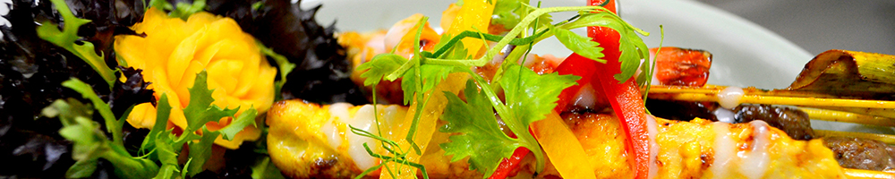
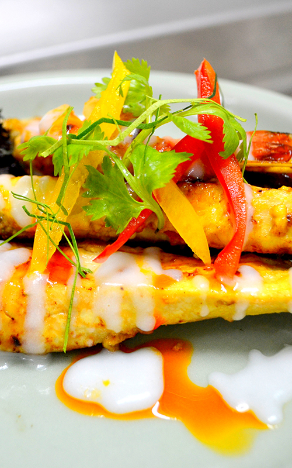
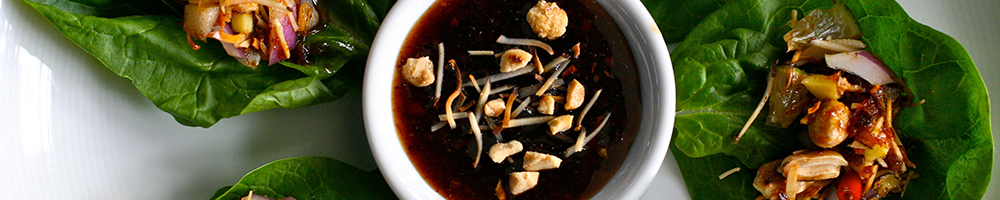
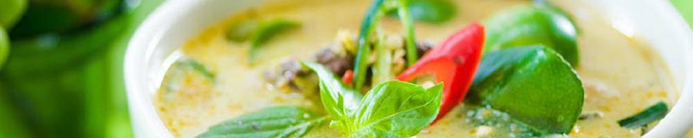
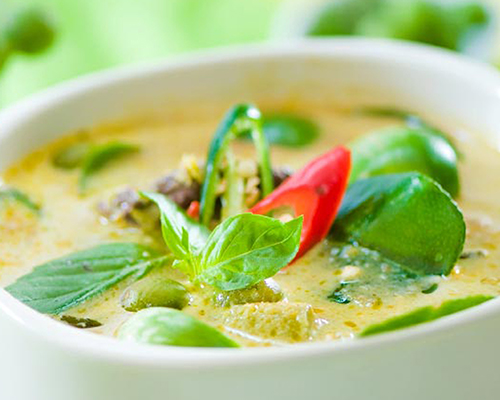
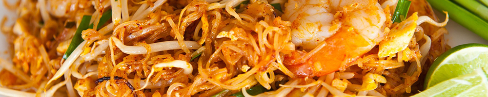
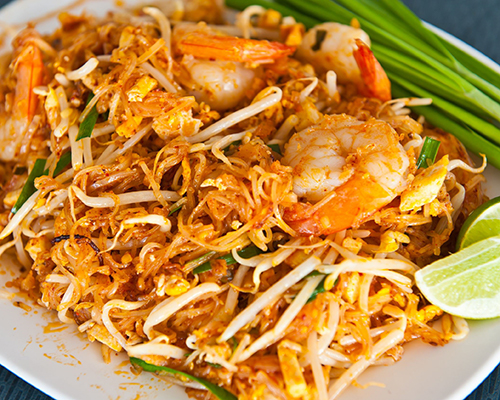
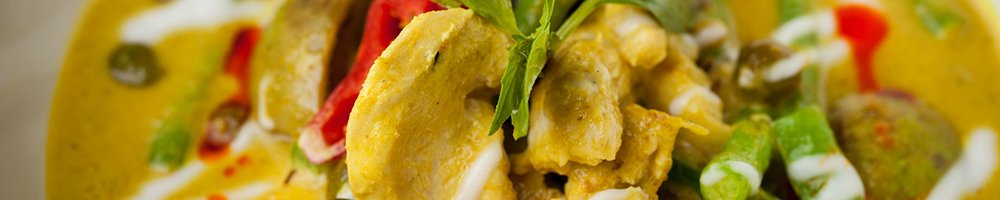
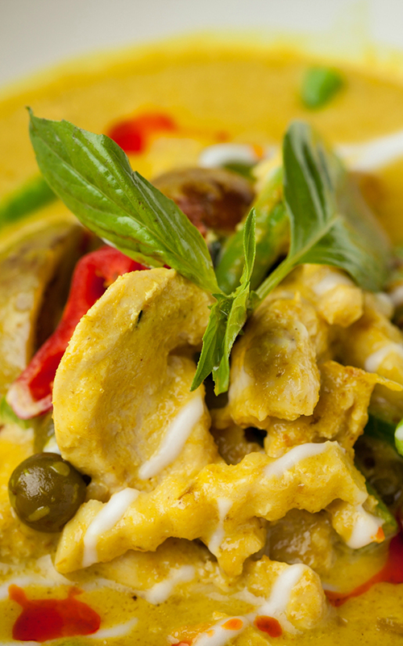

Home
Menu
About
Contact
Menu

Appetizers
1. KOO RUK (9.95)
Deep fried shrimps and squids served with sweet and sour sauce.
2. POR-PIER PAK (6.95)
Deep fried vegetarian egg rolls stuffed with silver noodles, onions, carrots and taro salad.
3. POR-PIER MOO (7.95)
Deep fried pork egg rolls stuffed with silver noodles, onions, carrots and taro salad.
4. TAO HOO TOD (6.95)
Deep fried tofu, served with sweet and sour sauce with ground peanut on top.
5. SAI AOU (8.95)
Deep fried pork sausage, served with vegetables.
6. GARLIC PORK SPARERIBS (8.95)
Fried marinated pork spareribs topped with garlic.
7. PLA MUEK TOD (9.95)
Deep fried calamari.
8. PEAK GAI TOD (7.95)
Deep fried chicken wings.
9. SA TAE (8.95)
Chicken or pork skewer marinated in herbs, spices and yellow curry powder.
10. FRESH ROLLS (6.95)
Rice paper rolls stuffed with vegetables.
11. KAO NAM TOD (8.95)
Fried rice ball and preserved pork, served with peanuts and vegetables.
12. TAMARIND SHRIMP (9.95)
Deep fried shrimp served with tamarind sauce.
13. ANGEL WINGS (9.95)
Deep fried stuffed chicken wings.
14. GUI CHAI (7.95)
Crispy vegetarian chive cakes.


Salads
15. SOM TUM GOONG YANG (9.95)
Shredded green papaya salad with grilled prawns.
16. SOM TUM THAI (8.95)
Shredded green papaya salad with dried shrimps.
17. SOM TUM POO (9.95)
Shredded green papaya salad with salted crabs.
18. LARB (9.95)
Pork, chicken, or beef salad mixed with red onion, mint leaves, cilantro, and ground roasted rice.
(Five spice duck or catfish 11.95)
19. EGGPLANT SALAD (9.95)
Broiled eggplant with minced shrimps and ground chicken.
21. YUM PLA MUK (10.95)
Squid salad mixed with onions, chili, ginger, basil and lemon grass.
22. YUM WOON SEN (9.95)
Silver noodle salad with minced pork and shrimp, black fungus, onions and chili in lime dressing.
(Vegetarian 7.95)
23. YUM NUER (9.95)
Beef salad mixed with onions, chili, cucumber and tomatoes in lime dressing.
24. YUM RUAM MIT TALAY (11.95)
Combination seafood salad mixed with onions in lime dressing.
25. NUM TOK (9.95)
Choice of slice toasted beef or pork with mint, ground roasted rice in lime dressing.

Soups
26. TOM KHA (9.95)
Hot and sour chicken soup with coconut milk.
(Vegetarian 7.95)
27. TOM YUM GOONG (10.95)
Hot and sour prawns soup with tomatoes, lemon grass, and galangal.
28. PO TAK (13.95)
Hot and sour combination seafood soup with tomatoes, lemon grass, and galangal.
29. GANG JERD WOON-SEN (8.95)
Silver noodles with ground pork and assorted vegetables soup.
(Vegetarian 7.25)



Chai Thai Favorites
30. KA MOO
Special pork leg stew.
(Rice plate 9.95)
(A la Carte 12.95)
32. KAO MAN GAI (8.95)
Steamed chicken over garlic rice.
33. KAO NA PED PA-LO (9.95)
Five spiced duck over steamed rice.
34. KAO RAD NA GAI (9.95)
Chicken sauteed with bamboo shoots, straw mushroom in gravy over rice.

Coconut Milk Curries
35. GANG GA-REE GAI (Yellow Curry)
Choice of chicken, beef or pork in mild yellow curry with potatoes.
(Rice plate 9.95)
(A La Carte 11.95)
36. GANG KHEW-WAN (Green Curry)
Choice of chicken, beef or pork in medium green curry.
(Rice plate 9.95)
(A La Carte 11.95)
37. GANG PANANG
Choice of chicken, beef or pork in medium red curry with fresh basil.
(Rice plate 9.95)
(A La Carte 11.95)
38. PUMPKIN CURRY (12.95)
Choice of chicken, beef, or pork in red curry with pumpkins, bell pepper and fresh basil.
39. GANG DANG (Red Curry)
Choice of chicken, beef, or pork in red curry with zucchini, eggplants, bell peppers and fresh basil.
(Rice plate 9.95)
(A La Carte 11.95)
40. GANG KOOR GOONG (12.95)
Shrimp in medium red curry with pineapple, tomatoes, and basil.
41. CHOO CHEE PLA (14.95)
Fried filet salmon topped with red curry and assorted vegetables.
42. SALMON CURRY (14.95)
Fried filet salmon topped with green curry, zucchini, eggplants, bell peppers and fresh basil.
43. CAT FISH CURRY (14.95)
Pan grilled cat fish in red curry, carrots, green beans, eggplants and bell peppers.
